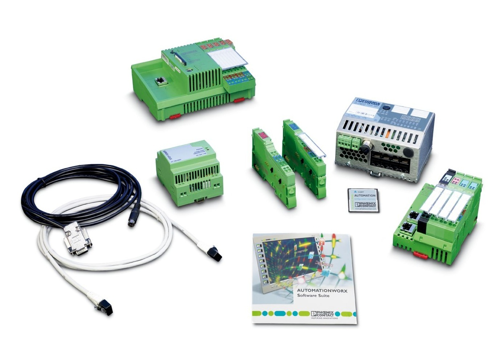
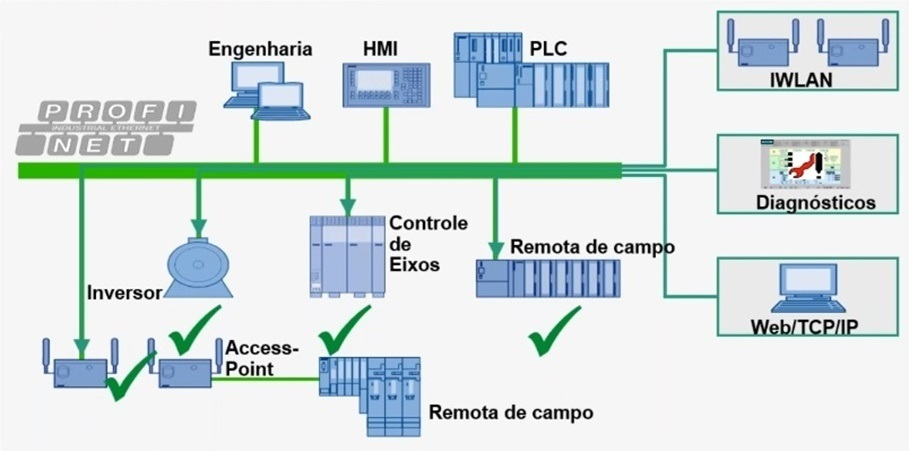

PROFINET (ETHERNET INDUSTRIAL)
ESTRUTURA FÍSICA E CABEAMENTO
PROFINET NA AUTOMAÇÃO INDUSTRIAL
O PROFINET (Process Field Network) é um padrão de comunicação Industrial Ethernet utilizado para conectar controladores, dispositivos de entrada e saída, acionamentos, instrumentos de processo, robôs e sistemas de supervisão. Ele permite a troca de dados de processo em tempo real e também oferece serviços de configuração, parametrização, diagnóstico e integração com sistemas de tecnologia da informação.
Em uma arquitetura típica, o controlador (PLC, DCS ou PAC) coordena a comunicação com dispositivos de campo e equipamentos de automação. Os dados cíclicos de entrada e saída são utilizados no controle da máquina ou do processo, enquanto as comunicações acíclicas atendem tarefas como leitura de diagnóstico, identificação e configuração dos dispositivos.

MEIOS FÍSICOS E CABOS ADOTADOS
O PROFINET utiliza a infraestrutura física da Ethernet IEEE 802.3. As instalações industriais empregam principalmente cabos de cobre com pares trançados e blindagem, mas também podem utilizar fibra óptica e, em aplicações específicas, comunicação sem fio compatível com os requisitos do sistema.
CABEAMENTO DE COBRE PARA AMBIENTES INDUSTRIAIS
- Cabo PROFINET Tipo A: indicado para instalações fixas, nas quais o cabo permanece imóvel após a instalação. É utilizado em calhas, eletrocalhas e ligações permanentes entre painéis e equipamentos.
- Cabo PROFINET Tipo B: adequado a instalações sujeitas a flexões ocasionais, vibração ou movimentação limitada, como trechos próximos a portas de máquinas e partes móveis com deslocamento moderado.
- Cabo PROFINET Tipo C: desenvolvido para aplicações com movimentação contínua, torção ou flexão repetitiva, como esteiras porta-cabos e eixos de robôs, desde que respeitados os raios de curvatura e limites indicados pelo fabricante.
- Categorias de cabos: cabos industriais equivalentes a Cat5e são comuns nas conexões de 100 Mbps. Cabos de maior desempenho, como Cat6 ou superiores, podem ser utilizados quando os equipamentos e o projeto exigirem taxas maiores ou maior margem de desempenho.
A conexão de cobre PROFINET mais comum utiliza dois pares trançados, geralmente com blindagem, para transmissão Fast Ethernet 100BASE-TX em Full-Duplex. Também existem interfaces e cabeamentos com quatro pares para conexões Gigabit Ethernet. A seleção do cabo deve considerar flexibilidade, temperatura, óleo, agentes químicos, vibração e exposição mecânica do ambiente.
CABEAMENTO POR FIBRA ÓPTICA
- Fibra multimodo: utilizada em enlaces internos de máquinas, instalações e prédios industriais, quando a distância e os transceptores disponíveis são compatíveis. Pode utilizar emissores ópticos de menor custo em enlaces de curta e média distância.
- Fibra monomodo: indicada para enlaces de maior alcance, como interligações entre prédios, galpões ou áreas industriais afastadas. O alcance efetivo depende do transceptor, do comprimento de onda, das perdas e do orçamento óptico.
- POF e PCF: fibras plásticas ou de núcleo de vidro com revestimento plástico podem ser utilizadas em determinadas aplicações industriais de curta distância, facilitando o manuseio e a instalação em equipamentos.
A fibra óptica é especialmente útil quando há diferenças de potencial entre áreas, longos percursos ou elevado nível de interferência eletromagnética. O limite de distância não é único para todas as instalações: depende do tipo de fibra, dos conectores, do transceptor e da taxa de transmissão adotada.
CONECTORES PADRONIZADOS E IDENTIFICAÇÃO
CONECTORES PARA CABEAMENTO DE COBRE
- RJ45 industrial: conector de oito posições utilizado em portas Ethernet de controladores, switches e dispositivos de campo. Existem versões com travamento, proteção mecânica e vedação para ambientes industriais.
- M12 codificado D: conector circular utilizado em diversas conexões Industrial Ethernet de 100 Mbps. Seu formato rosqueado oferece fixação mecânica e maior resistência a vibrações e contaminação, conforme o grau de proteção do conjunto.
- M12 codificado X: utilizado em equipamentos e cabos preparados para Ethernet de maior velocidade, incluindo aplicações Gigabit. A codificação deve ser compatível nas duas extremidades.
CONECTORES PARA FIBRA ÓPTICA
- BFOC/ST: conector óptico com acoplamento por baioneta, utilizado em algumas interfaces industriais para fibra.
- SC e SCRJ: conectores ópticos presentes em determinados equipamentos e sistemas PROFINET. A escolha deve respeitar a interface do transceptor e o tipo de fibra utilizado.
- LC: conector óptico compacto encontrado em módulos e equipamentos de comunicação por fibra, especialmente em switches e sistemas de distribuição.
TOPOLOGIAS SUPORTADAS NO PROFINET

TOPOLOGIA EM LINHA (DAISY CHAIN)
Na topologia em linha, os dispositivos são conectados sequencialmente. Muitos equipamentos PROFINET possuem duas portas Ethernet e um switch interno, permitindo que o cabo entre em uma porta e saia pela outra em direção ao próximo dispositivo. Essa organização reduz a quantidade de cabos e facilita a montagem de máquinas modulares, mas uma falha em um ponto ou cabo pode interromper a comunicação dos dispositivos posicionados depois da falha.
TOPOLOGIA EM ESTRELA E ÁRVORE
Na topologia em estrela, os equipamentos se conectam a um switch central. A topologia em árvore combina vários switches e estrelas, permitindo organizar células, máquinas, painéis e áreas de uma planta industrial em níveis hierárquicos. A falha de um switch central pode afetar os equipamentos conectados a ele, por isso o dimensionamento e a redundância devem ser considerados no projeto.
TOPOLOGIA EM ANEL E REDUNDÂNCIA
O PROFINET suporta topologia em anel por meio de mecanismos de redundância de mídia, como o MRP (Media Redundancy Protocol). O anel permite manter a comunicação por um caminho alternativo quando ocorre uma interrupção no cabo ou em um dos enlaces, desde que os dispositivos participantes sejam compatíveis e estejam configurados corretamente. Para aplicações que exigem redundância planejada de maior desempenho, pode ser utilizada a tecnologia MRPD, conforme o suporte dos equipamentos.
INTERFACE ELÉTRICA E TRANSMISSÃO DE SINAIS
SINALIZAÇÃO E NÍVEIS NO PROFINET
Como utiliza Ethernet, o PROFINET transmite dados por sinais elétricos diferenciais nos cabos de cobre ou por pulsos de luz nas fibras ópticas. Nas interfaces de cobre, o receptor interpreta a diferença de sinal entre os condutores dos pares trançados, reduzindo a influência de ruídos que atingem os dois fios de forma semelhante. Na fibra, a informação é representada por variações ópticas produzidas por emissores e interpretadas por receptores.
TRANSMISSÃO ELÉTRICA EM CABOS DE COBRE
- 100BASE-TX: interface Fast Ethernet comum em PROFINET, com taxa nominal de 100 Mbps e operação Full-Duplex. Utiliza pares trançados para transmissão e recepção simultâneas.
- 1000BASE-T: interface Gigabit Ethernet disponível em determinados equipamentos, utilizando quatro pares de cobre e oferecendo taxa nominal de 1 Gbps.
- Sinalização diferencial: o sinal é interpretado a partir da diferença elétrica entre os condutores de cada par, contribuindo para a rejeição de interferências comuns ao par.
TRANSMISSÃO ÓPTICA
Nas conexões por fibra óptica, os transceptores convertem os sinais elétricos em sinais luminosos e realizam a conversão inversa na recepção. As fibras são dielétricas, não conduzem corrente elétrica entre os equipamentos e apresentam alta imunidade a interferências eletromagnéticas. O comprimento de onda e a potência óptica dependem do tipo de transceptor e da fibra selecionada.
ALIMENTAÇÃO PELO BARRAMENTO E ENERGIA DOS EQUIPAMENTOS
O PROFINET, por si só, não estabelece que a alimentação elétrica dos dispositivos seja fornecida pelo mesmo meio utilizado para transportar os dados. Em instalações industriais, módulos de entrada e saída, sensores, acionamentos e switches normalmente recebem alimentação separada, frequentemente em 24 Vcc, conforme as especificações dos equipamentos.
- Alimentação separada: é a solução mais comum em painéis e máquinas industriais, utilizando fontes CC e circuitos de distribuição dimensionados para os dispositivos.
- PoE (Power over Ethernet): pode ser empregado quando a porta, o equipamento final e a instalação forem compatíveis com o padrão PoE correspondente. Essa possibilidade pertence à infraestrutura Ethernet e não é uma característica obrigatória do PROFINET.
ISOLAÇÃO E PROTEÇÃO CONTRA RUÍDOS
BLINDAGEM E ATERRAMENTO DOS CABOS
- Blindagem metálica: cabos industriais blindados reduzem o acoplamento de interferências eletromagnéticas ao sinal. A blindagem deve manter continuidade através dos conectores e ser instalada conforme as recomendações do fabricante e do projeto de compatibilidade eletromagnética.
- Aterramento funcional: a conexão da blindagem ao sistema de equipotencialização deve ser planejada para evitar diferenças de potencial e correntes indesejadas. A instalação deve seguir o projeto de equipotencialização e compatibilidade eletromagnética do local, as práticas de aterramento industrial e as orientações da PI e do fabricante; aterrar a blindagem sem considerar o projeto pode criar correntes indesejadas ou comprometer a proteção contra interferências.
- Separação de circuitos: os cabos de comunicação devem ser roteados de forma adequada em relação aos cabos de potência, motores, inversores e fontes de ruído, respeitando distâncias e cruzamentos recomendados.
IMUNIDADE DA FIBRA ÓPTICA
A fibra óptica não utiliza condutores metálicos para transportar o sinal e, por isso, não é afetada diretamente por campos eletromagnéticos da mesma forma que os cabos de cobre. Também pode reduzir problemas associados a diferenças de potencial entre áreas. Ainda assim, exige proteção mecânica, controle do raio de curvatura, limpeza dos conectores e respeito ao orçamento óptico.
PROTOCOLO DE ENLACE E ACESSO AO MEIO (MAC)
O PROFINET utiliza a infraestrutura Ethernet e acrescenta mecanismos próprios para comunicação industrial. O comportamento do enlace depende do canal utilizado: tarefas de configuração e diagnóstico podem utilizar TCP/IP, enquanto a troca de dados de processo em tempo real utiliza mecanismos que reduzem o processamento adicional das camadas de rede e transporte.
MÉTODO DE ACESSO AO MEIO NO PROFINET
COMUTAÇÃO E TRANSMISSÃO FULL-DUPLEX
Nas redes PROFINET modernas, os dispositivos são interligados por switches Ethernet e enlaces ponto a ponto. A operação Full-Duplex permite transmitir e receber simultaneamente em um mesmo enlace. Como não há disputa por um barramento compartilhado em Half-Duplex, o mecanismo histórico CSMA/CD não é utilizado no funcionamento normal desses enlaces comutados.
CANAIS DE COMUNICAÇÃO: TCP/IP, RT E IRT
- Comunicação TCP/IP padrão: utilizada para funções não críticas em tempo, como parametrização, diagnóstico, transferência de dados e integração com sistemas de nível superior. O processamento pelas camadas TCP/IP pode introduzir atrasos variáveis.
- PROFINET RT (Real Time): transporta dados de processo em tempo real, desviando do processamento TCP/IP para reduzir a latência e a variação do tempo de entrega. É utilizado na maioria das aplicações típicas de entradas e saídas distribuídas.
- PROFINET IRT (Isochronous Real Time): acrescenta sincronização e escalonamento do tráfego, sendo indicado para aplicações que exigem ciclos muito curtos e sincronização precisa, como controle de movimento. Depende de suporte de hardware compatível.
ESTRUTURA DO QUADRO E MENSAGEM PROFINET
Os dados PROFINET são transportados em quadros Ethernet. Em uma transmissão PROFINET RT, o quadro utiliza endereços MAC de origem e destino e o campo EtherType 0x8892, que identifica o conteúdo como comunicação PROFINET em tempo real. O campo Frame ID identifica o tipo de quadro ou a relação de comunicação, seguido pelos dados de processo e informações de estado.
CAMPOS PRINCIPAIS DO QUADRO
- Endereço MAC de destino: identifica a interface de rede que deverá receber o quadro.
- Endereço MAC de origem: identifica a interface que transmitiu o quadro.
- EtherType (0x8892): identifica o quadro PROFINET RT para que seja encaminhado ao tratamento correspondente, sem passar pelo processamento IP convencional.
- Frame ID: identifica o tipo de comunicação PROFINET e permite associar o quadro à relação de dados correspondente.
- Dados de processo: transportam informações cíclicas de entradas, saídas ou outros dados associados ao dispositivo.
- Status e FCS: os campos de estado indicam informações sobre a qualidade ou condição da comunicação; o FCS Ethernet utiliza CRC para detectar erros no quadro.
COMUNICAÇÃO CÍCLICA E ACÍCLICA
A comunicação cíclica transporta os dados de processo em intervalos configurados, por exemplo, os valores de sensores e os comandos enviados pelo controlador aos módulos de saída. A comunicação acíclica é utilizada para tarefas como configuração, leitura de parâmetros, identificação e diagnóstico. A separação entre esses tipos permite atender tanto à necessidade de atualização contínua do processo quanto às operações de engenharia e manutenção.
PARÂMETROS OPERACIONAIS E DESEMPENHO
TAXA DE TRANSMISSÃO (BIT RATE / BANDWIDTH)
A taxa de transmissão do PROFINET depende da interface Ethernet dos equipamentos, dos switches e do meio físico utilizado. A taxa nominal representa a capacidade da camada física e não deve ser confundida com a quantidade de dados úteis efetivamente transferida por ciclo.
- 100 Mbps: taxa muito comum em dispositivos PROFINET de campo, especialmente em interfaces 100BASE-TX Full-Duplex.
- 1 Gbps: utilizado em determinados controladores, switches e enlaces de backbone para aumentar a capacidade de comunicação entre segmentos.
- Taxas superiores: podem ser utilizadas em equipamentos e infraestruturas compatíveis, mas a velocidade efetiva de cada enlace será limitada pela interface mais lenta do caminho.
DISTÂNCIA MÁXIMA DOS SEGMENTOS
CABEAMENTO DE COBRE
Em conexões Ethernet industriais por cobre, o comprimento usual máximo de um segmento entre dois nós ativos é de 100 metros, considerando o tipo de cabo e a interface Ethernet compatíveis. Para percursos maiores, podem ser instalados switches ou outros equipamentos de regeneração adequados, formando novos segmentos.
FIBRA ÓPTICA
A distância máxima em fibra óptica depende do tipo de fibra (multimodo, monomodo, POF ou PCF), da taxa de transmissão, do comprimento de onda, do transceptor e da quantidade de conexões e emendas. Enlaces com fibra podem alcançar centenas de metros ou vários quilômetros, conforme o projeto óptico. Portanto, não existe um único limite de distância aplicável a todas as instalações PROFINET.
DETERMINISMO E TEMPO DE CICLO
Classificação: o PROFINET pode oferecer comportamento determinístico para dados de automação quando utiliza os mecanismos de tempo real adequados e uma arquitetura compatível.
- PROFINET RT: pode atender aplicações de automação com tempos de atualização na faixa de milissegundos. A PI descreve aplicações RT com desempenho determinístico na ordem de 1 a 10 ms, mas esse intervalo é uma referência, não uma garantia para toda instalação; o resultado depende da configuração, da classe de desempenho, do ciclo configurado e dos equipamentos utilizados.
- PROFINET IRT: pode permitir ciclos abaixo de um milissegundo e sincronização com variação de atraso na faixa de microssegundos em arquiteturas e dispositivos compatíveis. Esses valores dependem da configuração e dos equipamentos e não constituem uma garantia universal para qualquer instalação PROFINET.
- Limitação: a comunicação TCP/IP convencional utilizada para parametrização, diagnóstico ou integração não deve ser tratada como determinística para controle de tempo crítico. O desempenho real depende da classe de desempenho, do ciclo configurado, da arquitetura e dos equipamentos utilizados.
NÍVEL NA PIRÂMIDE DA AUTOMAÇÃO
Classificação: atua principalmente nos níveis 1 e 2, conectando dispositivos de campo, módulos de entrada e saída, acionamentos e controladores. Também pode participar do nível 3 quando transporta dados para sistemas de supervisão e controle da produção.
Justificativa: o PROFINET realiza a comunicação entre CLPs, dispositivos de campo e equipamentos de automação, permitindo o controle de máquinas e processos. Sua integração com sistemas de supervisão amplia o fluxo de informações para níveis superiores da planta.